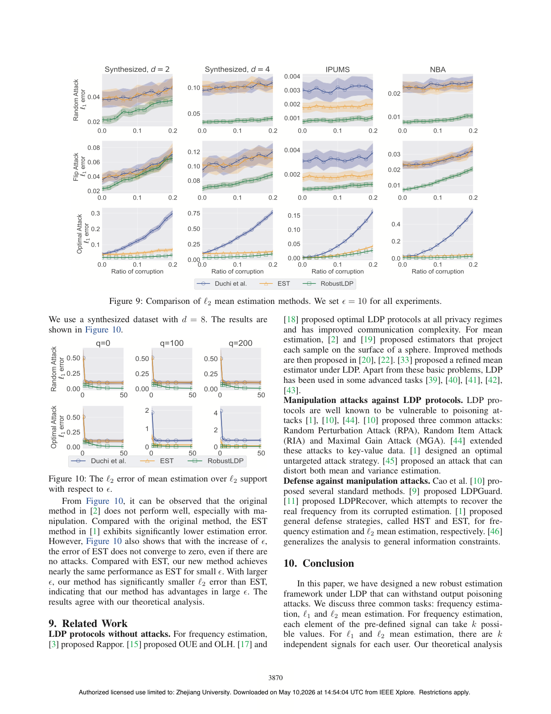

An Attack-Agnostic Defense Framework Against Manipulation Attacks under Local Differential Privacy
IEEE S&P 2025

Abstract
—Protection of local differential privacy (LDP) proto- cols against manipulation attacks is an important and challeng- ing problem. We hope to design an attack-agnostic framework, which does not rely on any knowledge of attackers. An early work [ 1] restricts the attacker’s capability by converting each sample into a binary signal. However, the compression of signal leads to severe loss of information, and thus results in unnec- essary sacrifice of utility, especially when ϵ> 1. In this paper, we propose a general estimation framework RobustLDP for robust estimation under LDP . The general idea is to send carefully crafted pre-defined information to all users, and then aggregate the feedback at the server . We strike a better tradeoff between preserving information and restricting the attacker’s capability. We instantiate RobustLDP for frequency estimation and mean estimation in ℓ1 and ℓ2 support, which serve as building blocks for more advanced tasks. We also establish theoretical guarantees for all possible attacks. The result shows that our method significantly outperforms the existing one for ϵ> 1. Extensive experiments on multiple real- world datasets validate the effectiveness of our method.
Resources
Citation
@inproceedings{ZZDWWLG25,
author = {Puning Zhao and Zhikun Zhang and Jiawei Dong and Jiafei Wu and Shaowei Wang and Zhe Liu and Yunjun Gao},
title = {{An Attack-Agnostic Defense Framework Against Manipulation Attacks under Local Differential Privacy}},
booktitle = {{S&P}},
publisher = {IEEE},
year = {2025},
}